Utility-Scale Solar PV Siting & Strategic Zoning — VeronaLocalizzazione di impianti fotovoltaici utility-scale & zonizzazione strategica — Verona
A GIS-based Multi-Criteria Decision Analysis (MCDA) for hotspots and strategic-districts identification — Verona provinceUn'analisi multicriterio (MCDA) GIS per individuare gli hotspot e i distretti strategici — Provincia di Verona
1.Project OverviewPanoramica del progetto
This project identifies and delineates the macro-areas (Districts) most strategically suited to the development of utility-scale solar PV plants in the Province of Verona. The goal is to optimise the territorial scouting phase, reducing permitting risk through a GIS-based Multi-Criteria Decision Analysis (MCDA).Il progetto identifica e perimetra le macro-aree (Distretti) strategicamente più idonee allo sviluppo di impianti fotovoltaici utility-scale nella Provincia di Verona. L'obiettivo è ottimizzare la fase di scouting territoriale, riducendo i rischi di permitting attraverso un approccio analitico GIS-based Multi-Criteria Decision Analysis (MCDA).
The analysis integrates and processes three information macro-layers: land-use suitability (penalising prime farmland and woodland, favouring already-degraded or built-up surfaces), morphological factors (slope and aspect from the DEM), and environmental/territorial constraints (Boolean exclusion masks: Natura 2000 network, water bodies, dense urban areas).L'analisi integra e processa tre macro-livelli informativi: idoneità d'uso del suolo (penalizzando i suoli agricoli di pregio e le aree boscate, favorendo le superfici già degradate o antropizzate), fattori morfologici (pendenza ed esposizione da DEM), e vincoli ambientali e territoriali (maschere di esclusione booleane: Rete Natura 2000, corpi idrici, aree urbane dense).
2.Strategic Value & OutputValore strategico & output
The processing goes beyond a simple abstract suitability map, translating the data into concrete territorial clusters. Through the identification of Solar Hotspots, the territory is synthesised into three strategic macro-districts (West Verona, Verona South Industrial, Lower Veronese Plain). The final output is a Spatial Decision Support System (SDSS) able to steer investments toward the areas with the highest yield and lowest permitting constraint.L'elaborazione permette di superare la semplice mappa di idoneità astratta, traducendo i dati in cluster territoriali concreti. Attraverso l'identificazione dei Solar Hotspots, il territorio è sintetizzato in tre macro-distretti strategici (West Verona, Verona South Industrial, Lower Veronese Plain). L'output finale è uno strumento di Supporto alle Decisioni (SDSS) capace di guidare gli investimenti verso le aree a più alto rendimento e a minor vincolo autorizzativo.
3.Study AreaArea di studio
The study area covers the Province of Verona, marked by strong geomorphological heterogeneity:L'area di studio comprende la Provincia di Verona, caratterizzata da una forte eterogeneità geomorfologica:
- plain in the southern part, with extensive farmland;pianura nella parte meridionale con aree agricole estensive;
- hills and mountains to the north;rilievi collinari e montani a nord;
- the presence of Lake Garda.presenza del Lago di Garda.
This variety directly conditions energy productivity, regulatory constraints and the engineering feasibility of the plants.Questa varietà condiziona direttamente producibilità energetica, vincoli normativi e fattibilità ingegneristica degli impianti.
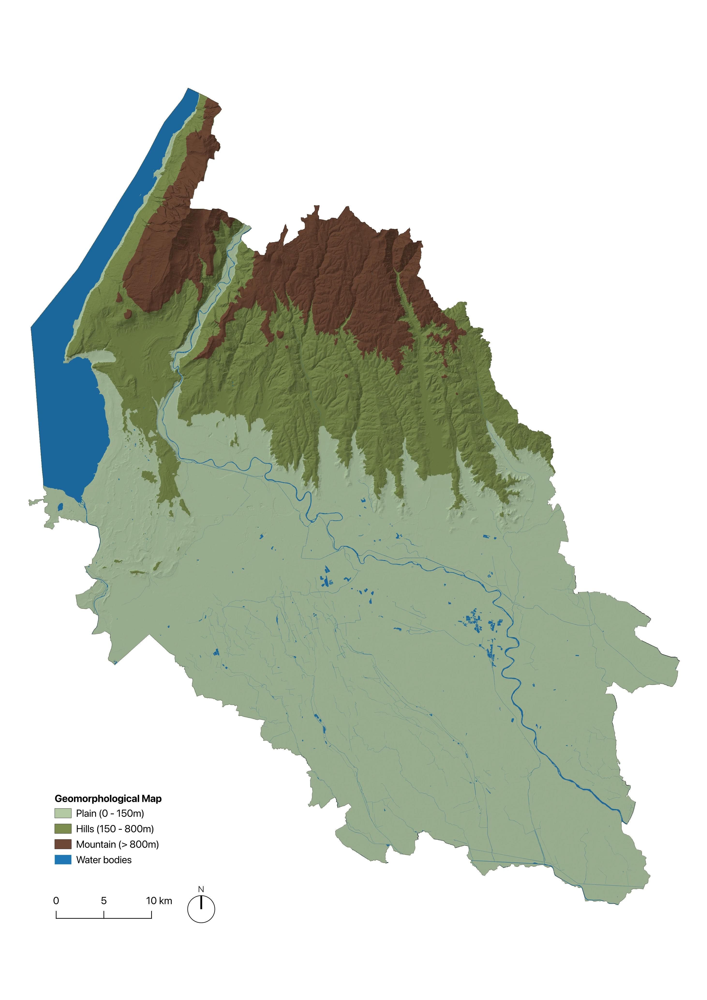
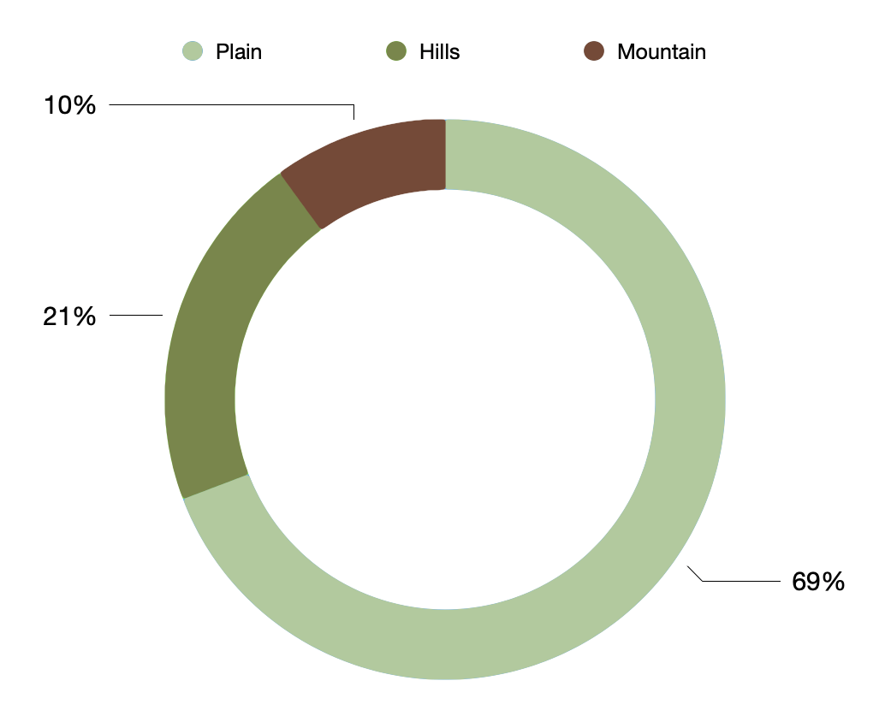
| Geomorphological CategoryCategoria geomorfologica | Elevation ClassesClassi altimetriche | Total Area (km²)Area totale (km²) | Percentage (%)Percentuale (%) |
|---|---|---|---|
| PlainPianura | 0–150 m (Classes 1 & 2)0–150 m (classi 1 e 2) | 2.143,5 km² | 69,21% |
| HillsCollina | 150–800 m (Classes 3 & 4)150–800 m (classi 3 e 4) | 643,1 km² | 20,77% |
| MountainMontagna | > 800 m (Classes 5 & 6)> 800 m (classi 5 e 6) | 310,6 km² | 10,02% |
| TOTAL PROVINCETOTALE PROVINCIA | All Classes (1–6)Tutte le classi (1–6) | 3.097,2 km² | 100,00% |
4.Data SourceFonti dei dati
| Dataset | SourceFonte | TypeTipo |
|---|---|---|
| Land Cover (2023) | Geoportale Regione Veneto | VectorVettoriale |
| DEM | Istituto Nazionale di Geofisica e Vulcanologia — Sezione di Pisa (TINITALY) | Raster — 10 m cell sizeRaster — cella 10 m |
| Provincial & municipal boundariesConfini provinciali e comunali | Geoportale Regione Veneto | VectorVettoriale |
| Natura 2000 Network — boundaryRete Natura 2000 — perimetro | Geoportale Regione Veneto | VectorVettoriale |
5.MethodologyMetodologia
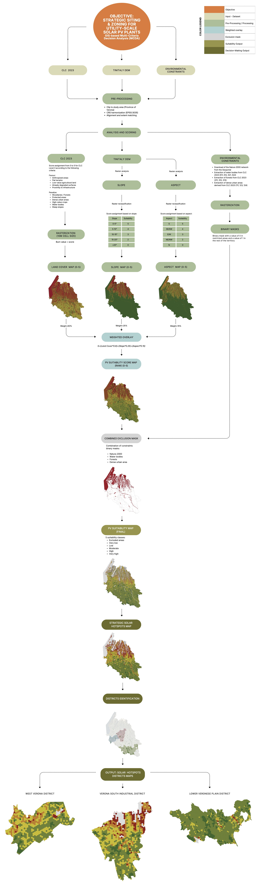
The workflow is developed entirely in QGIS and integrates three macro-layers analysed in parallel: land-use model analysis (minimising the consumption of productive farmland), morphological terrain analysis (computing and reclassifying slope and aspect from the DEM), and environmental/regulatory constraint analysis (Boolean exclusion masks). Through a Weighted Overlay (MCDA) process, the weights assigned to each criterion are combined to generate the potential-suitability map, then filtered with the constraint mask. The output is finally clustered on a hexagonal grid to identify the highest-potential macro-districts.Il flusso è sviluppato interamente in ambiente QGIS e integra tre macro-livelli analizzati in parallelo: analisi del modello d'uso del suolo (minimizzando il consumo di suolo agricolo produttivo), analisi morfologica del territorio (calcolo e riclassificazione di pendenza ed esposizione dal DEM), e analisi dei vincoli ambientali e normativi (maschere di esclusione booleane). Attraverso un processo di Weighted Overlay (MCDA), i pesi assegnati a ciascun criterio sono combinati per generare la mappa di idoneità potenziale, poi filtrata con la maschera dei vincoli. L'output è infine clusterizzato su griglia esagonale per identificare i macro-distretti a più alto potenziale.
6.Intermediate MapsMappe intermedie
This section gathers the knowledge cartography and the multi-source datasets integrated into the model. The preliminary analysis of these geographic, morphological and land-use factors maps the real characteristics of the Province of Verona that condition energy productivity, regulatory constraints and engineering feasibility.Questa sezione raccoglie la cartografia conoscitiva e i dataset multisorgente integrati nel modello. L'analisi preliminare di questi fattori geografici, morfologici e d'uso del suolo mappa le caratteristiche reali della Provincia di Verona, che condizionano producibilità energetica, vincoli normativi e fattibilità ingegneristica.
6.1 Raw Input Data6.1 Dati di input grezzi
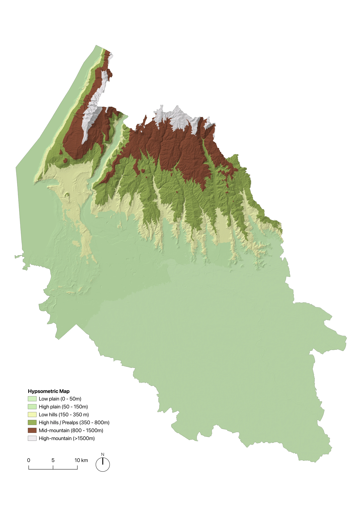
6.1.1 Hypsometric Map6.1.1 Carta ipsometrica
Identifies the elevation belts of the territory. It isolates the plain and low-hill areas (more suitable logistically and operationally) from the pre-Alpine mountain zones, marked by harsh climates and potential accessibility issues.Identifica le fasce altimetriche del territorio. Permette di isolare le aree di pianura e di bassa collina (maggiormente idonee dal punto di vista logistico e operativo) dalle zone montane prealpine, caratterizzate da climi rigidi e potenziali problemi di accessibilità.
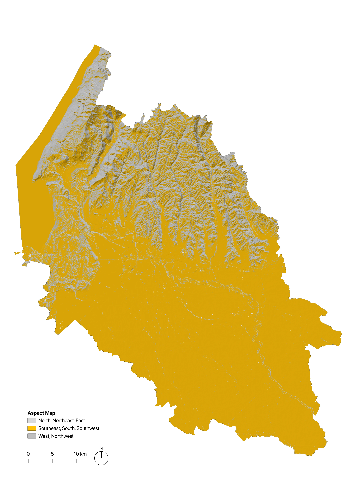
6.1.2 Aspect Map6.1.2 Carta dell'esposizione
Analyses slope orientation. To optimise the plant's Performance Ratio, the model isolates and rewards areas with favourable exposure (South, South-East, South-West) that ensure the maximum annual solar irradiation, excluding north-facing slopes, structurally inefficient.Analizza l'orientamento dei versanti. In ottica di ottimizzazione del Performance Ratio dell'impianto, il modello isola e premia le aree con esposizione favorevole (Sud, Sud-Est, Sud-Ovest) che garantiscono il massimo irraggiamento solare annuo, escludendo i versanti esposti a Nord, strutturalmente inefficienti.
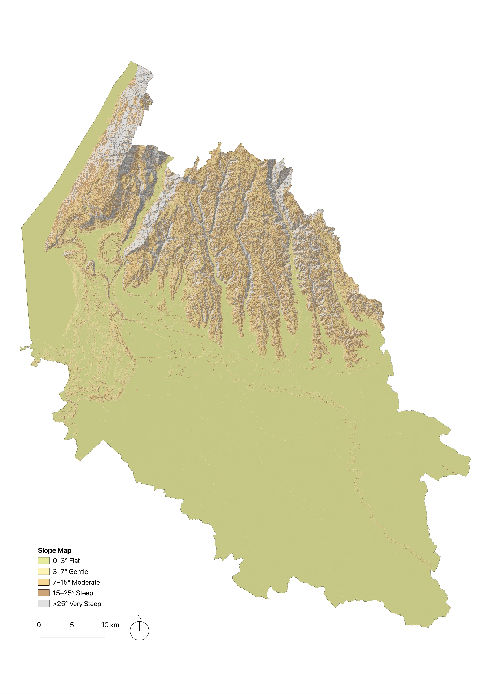
6.1.3 Slope Map6.1.3 Carta della pendenza
The most critical morphological factor for the site's civil engineering. High slopes drastically increase earth-moving costs, hydrogeological instability risks and mutual-shading issues between module strings. Flat or gently sloping terrain is therefore optimal for standard solar-tracking mounting structures, reducing levelling and installation costs.Rappresenta il fattore morfologico più critico per l'ingegneria civile del sito. Pendenze elevate aumentano drasticamente i costi di movimento terra, i rischi di instabilità idrogeologica e le problematiche di ombreggiamento reciproco tra le stringhe di moduli. Terreni pianeggianti o con pendenze minime sono quindi ottimali per le strutture di montaggio standard a inseguimento solare, riducendo livellamento e costi di installazione.
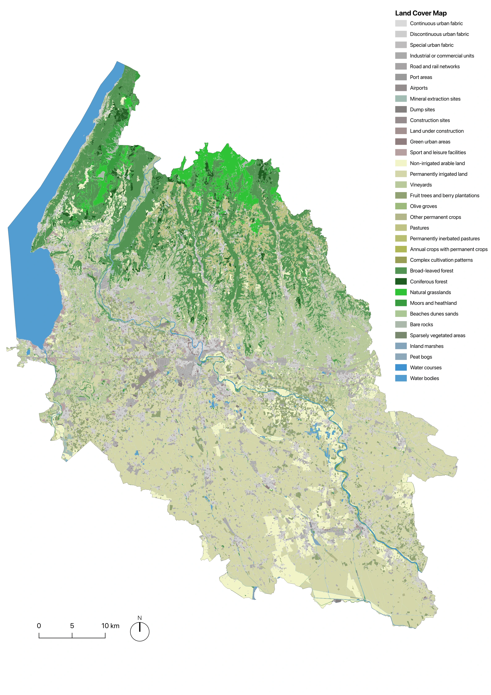
6.1.4 Land Cover Map6.1.4 Carta dell'uso del suolo
The information base for the project's agro-environmental sustainability. Based on CORINE Land Cover classes, it maps the actual use of the provincial surfaces: it is set to exclude or penalise prime farmland, woodland and natural areas (zeroing fertile-soil consumption), rewarding built-up surfaces, disused industrial areas or marginal land — strategic to reduce landscape impact and speed up permitting.Rappresenta la base informativa per la sostenibilità agro-ambientale del progetto. Basata sulle classi del CORINE Land Cover, mappa la destinazione reale delle superfici provinciali: è impostata per escludere o penalizzare suoli agricoli di pregio, aree boscate e zone naturali (azzerando il consumo di suolo fertile), premiando superfici antropizzate, aree industriali dismesse o terreni marginali, strategici per ridurre l'impatto paesaggistico e accelerare il permitting.
6.2 Environmental Constraints (Binary Masks)6.2 Vincoli ambientali (maschere binarie)
This step defines the absolute-exclusion criteria through binary masks, where each cell is assigned a Boolean value (0 = excluded, 1 = suitable). The filtering zeroes out the risk of regulatory conflicts upstream, removing from the model the areas that are legally or physically non-buildable.Questa fase definisce i criteri di esclusione assoluta tramite maschere binarie, dove a ogni cella è assegnato un valore booleano (0 = escluso, 1 = idoneo). Il filtraggio azzera a monte il rischio di conflitti normativi, eliminando dal modello le aree legalmente o fisicamente non edificabili.
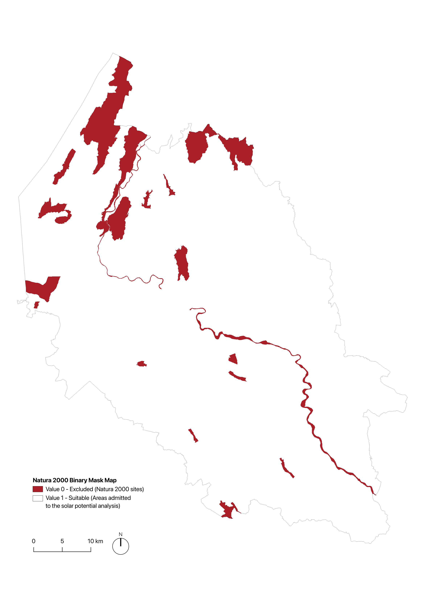
6.2.1 Natura 2000 Binary Mask6.2.1 Maschera binaria Natura 2000
Isolates and fully zeroes the sites protected by the European network (SAC and SPA). Being maximum-protection areas for biodiversity, the exclusion prevents insurmountable constraints during the Environmental Impact Assessment (EIA).Isola e azzera completamente i siti protetti dalla rete europea (ZSC e ZPS). Trattandosi di aree a massima tutela per la biodiversità, l'esclusione previene vincoli insuperabili in fase di Valutazione di Impatto Ambientale (VIA).
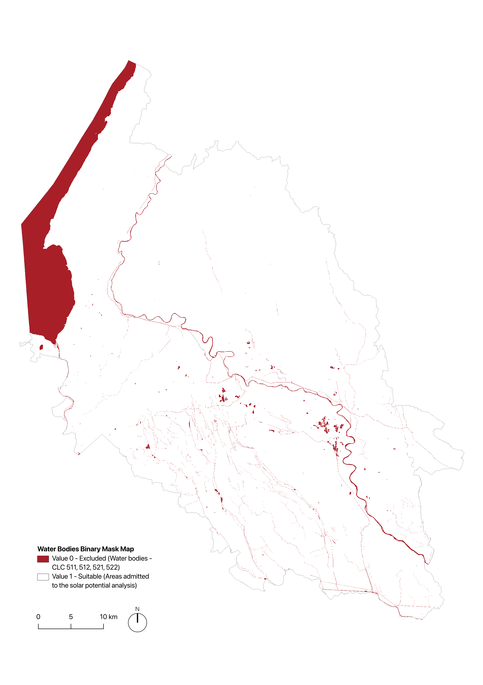
6.2.2 Water Bodies Binary Mask6.2.2 Maschera binaria corpi idrici
Excludes surface water bodies, rivers and their geomorphological buffers, based on the CORINE Land Cover hydrographic classes. This constraint protects the hydrogeological setting and avoids flood-prone areas.Esclude i corpi idrici superficiali, i fiumi e i relativi buffer di rispetto geomorfologico, basandosi sulle classi idrografiche del CORINE Land Cover. Questo vincolo tutela l'assetto idrogeologico ed evita le aree a rischio inondazione.
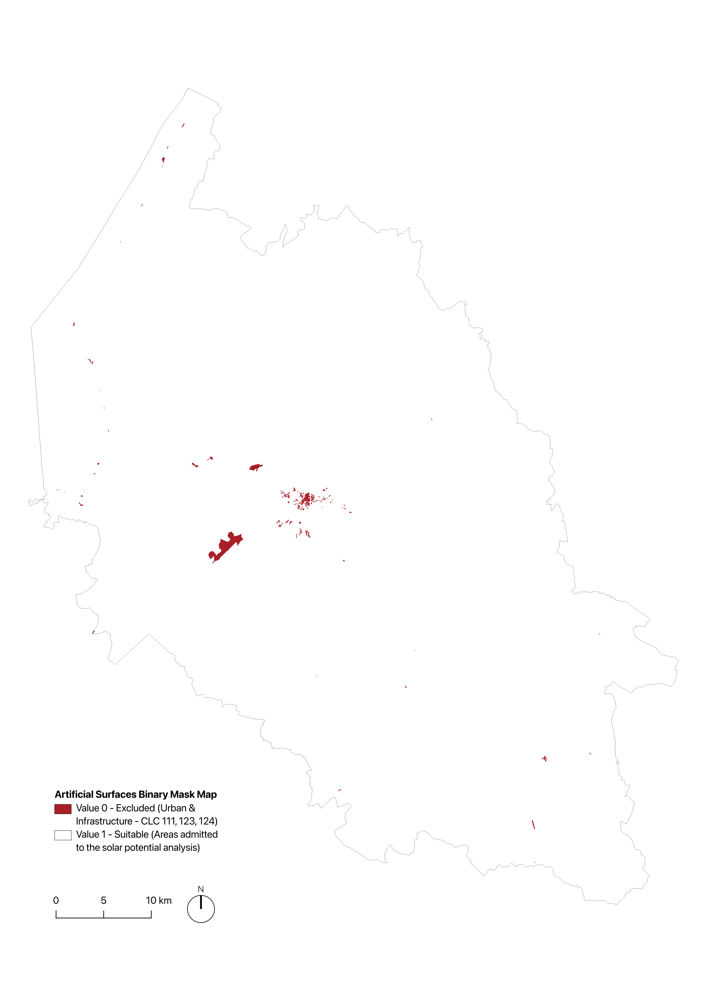
6.2.3 Artificial Surfaces Binary Mask6.2.3 Maschera binaria superfici artificiali
Excludes urban centres, continuous and discontinuous residential fabric, and large industrial or commercial infrastructure. This constraint preserves consolidated built-up areas and zeroes conflicts tied to local urban planning.Esclude i centri urbani, il tessuto residenziale continuo e discontinuo, e le grandi infrastrutture industriali o commerciali. Questo vincolo preserva le aree antropizzate consolidate e azzera i conflitti legati alla pianificazione urbanistica locale.
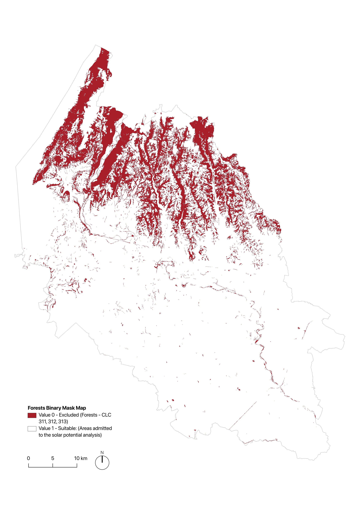
6.2.4 Forests Binary Mask6.2.4 Maschera binaria aree boscate
Isolates and fully excludes woodland — coniferous, broad-leaved and mixed forests. The exclusion protects the forest heritage and ecological corridors, preventing constraints linked to hydrogeological risk and the landscape-authorisation process.Isola ed esclude completamente le aree boscate — foreste di conifere, latifoglie e boschi misti. L'esclusione garantisce la tutela del patrimonio forestale e dei corridoi ecologici, prevenendo vincoli legati al dissesto idrogeologico e all'iter autorizzativo paesaggistico.
6.3 Score Maps6.3 Mappe di punteggio
Here the environmental and morphological data are standardised through reclassification: each cell is assigned a discrete score on a 0–5 scale (maximum suitability), to make the different layers geometrically comparable in the final calculation.In questa fase i dati ambientali e morfologici sono standardizzati tramite riclassificazione: a ogni cella è assegnato un punteggio discreto su scala da 0 a 5 (idoneità massima), per rendere i diversi layer geometricamente confrontabili nell'algoritmo di calcolo finale.
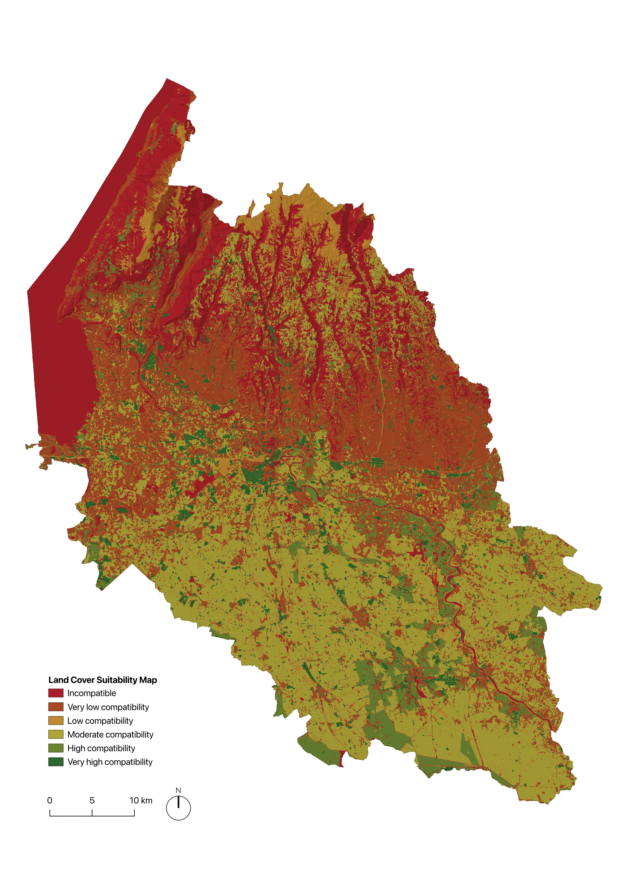
6.3.1 Land Cover Suitability Map6.3.1 Idoneità dell'uso del suolo
Translates land use into compatibility levels. The highest scores (5) go to degraded built-up areas and marginal land, while values decrease to the minimum for active farmland or vegetated surfaces.Traduce l'uso del suolo in livelli di compatibilità. I punteggi massimi (5) sono assegnati alle aree antropizzate degradate e ai terreni marginali, mentre i valori decrescono fino al minimo per le superfici agricole attive o vegetate.
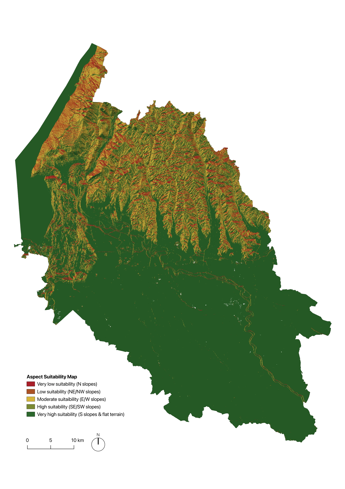
6.3.2 Aspect Suitability Map6.3.2 Idoneità dell'esposizione
Converts slope orientation into energy-efficiency potential. It gives the maximum score (5) to South, South-East and South-West exposures and to flat terrain, progressively penalising exposures toward the northern quadrants.Converte l'orientamento dei versanti in potenziale di efficienza energetica. Assegna il punteggio massimo (5) alle esposizioni a Sud, Sud-Est e Sud-Ovest e ai terreni pianeggianti, penalizzando progressivamente le esposizioni verso i quadranti settentrionali.
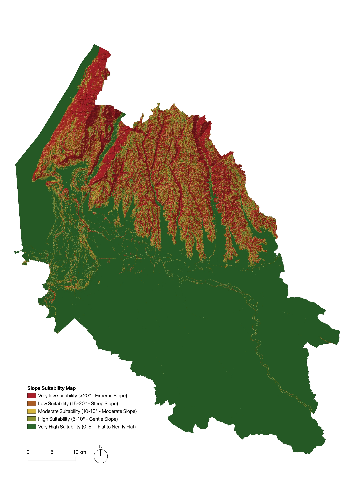
6.3.3 Slope Suitability Map6.3.3 Idoneità della pendenza
Classifies terrain steepness by the site's engineering complexity. Flat or nearly flat terrain (0–5°) gets the maximum score, ideal for tracking systems, while slopes above 20° are penalised for unsustainable piling costs.Classifica l'acclività del terreno in base alla complessità ingegneristica del sito. I terreni pianeggianti o quasi piatti (0–5°) ottengono il punteggio massimo, ideali per i sistemi a inseguimento, mentre le pendenze superiori a 20° sono penalizzate per i costi insostenibili di palificazione.
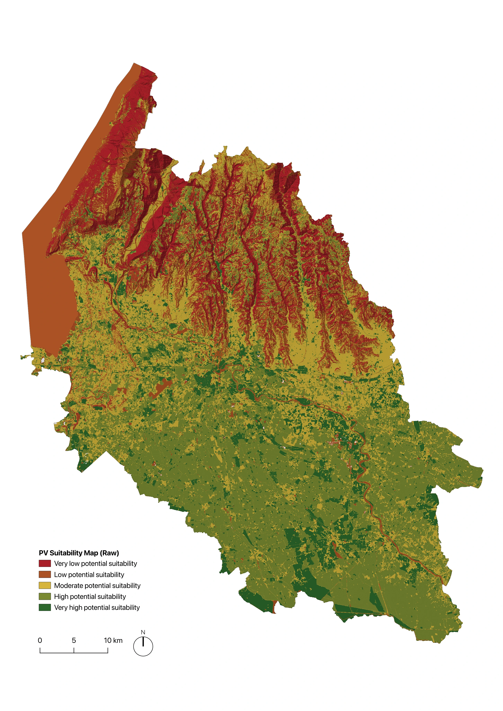
6.3.4 PV Suitability Map (Raw)6.3.4 Mappa di idoneità FV (grezza)
The preliminary integration of the three reclassified layers (Land use, Aspect, Slope). It shows the first numerical synthesis of the territorial potential of the Province of Verona, before the geometric application of the binary exclusion masks.Rappresenta l'integrazione preliminare dei tre layer riclassificati (Suolo, Esposizione, Pendenza). Mostra la prima sintesi numerica del potenziale territoriale della Provincia di Verona, prima dell'applicazione geometrica delle maschere binarie di esclusione.
7.Criteria Rating & EvaluationValutazione e punteggio dei criteri
The environmental and morphological data are standardised through reclassification: each cell is assigned a discrete 0–5 score (from minimum to maximum suitability), to make the layers geometrically comparable in the final algorithm.I dati ambientali e morfologici sono standardizzati tramite riclassificazione: a ogni cella è assegnato un punteggio discreto su scala 0–5 (da idoneità minima a massima), per rendere i layer geometricamente confrontabili nell'algoritmo finale.
| CriteriaCriterio | Unsuitable ConditionsCondizioni sfavorevoli | Score RatingPunteggio |
|---|---|---|
| Land Cover | Forest, protected, dense-urban and prime-crop areasAree forestali, protette, urbane dense, colture di pregio | 0–5 |
| Slope | Steep slopes (> 15° / > 25°)Pendenze elevate (> 15° / > 25°) | 0–5 |
| Aspect | North, North-East, North-West (minimum irradiation, strong shading)Nord, Nord-Est, Nord-Ovest (minimo irraggiamento, forte ombreggiamento) | 0–5 |
Land Cover (CORINE Land Cover)
| CLC Macro-CategoryMacro-categoria CLC | Included CLC CodesCodici CLC inclusi | ScorePunteggio |
|---|---|---|
| Industrial, Mining & Open ExtractionIndustriale, estrattivo & cave a cielo aperto | 121, 131, 132 | 5 |
| Arable Land & Construction SitesSeminativi & cantieri | 134, 211 | 4 |
| Arable Land (Restricted) & PasturesSeminativi (con restrizioni) & pascoli | 133, 212, 231 | 3 |
| Low-Yield & Transport NetworksAree a bassa resa & reti di trasporto | 122, 224, 232, 321, 332, 333 | 2 |
| Urban Fabric & Prime CropsTessuto urbano & colture di pregio | 112, 113, 123, 141, 213, 221, 222, 223, 241, 242, 322, 323 | 1 |
| Dense Urban Fabric & InfrastructureTessuto urbano denso & infrastrutture | 111, 124, 142 | 0 |
| Forests & Protected EcosystemsForeste & ecosistemi protetti | 311, 312, 313, 331, 335 | 0 |
| Wetlands & Water BodiesZone umide & corpi idrici | 411, 412, 421, 423, 511, 512, 521, 522 | 0 |
Slope
| Slope Range (Degrees)Intervallo di pendenza (gradi) | Assigned ScorePunteggio assegnato |
|---|---|
| 0° – 5° | 5 |
| 5° – 10° | 4 |
| 10° – 15° | 3 |
| 15° – 20° | 2 |
| > 20° | 0 |
Aspect
| Aspect / DirectionEsposizione / Direzione | Azimuth RangeIntervallo di azimut | ScorePunteggio |
|---|---|---|
| South (S)Sud (S) | 157.5° – 202.5° | 5 |
| Southeast / Southwest (SE/SW)Sud-Est / Sud-Ovest (SE/SO) | 112.5°–157.5° & 202.5°–247.5° | 4 |
| East / West (E/W)Est / Ovest (E/O) | 67.5°–112.5° & 247.5°–292.5° | 3 |
| Northeast / Northwest (NE/NW)Nord-Est / Nord-Ovest (NE/NO) | 22.5°–67.5° & 292.5°–337.5° | 2 |
| North (N)Nord (N) | 337.5°–360° & 0°–22.5° | 0 |
8.Weighted OverlayWeighted Overlay (somma pesata)
| CriteriaCriterio | WeightPeso | Technical MotivationMotivazione tecnica |
|---|---|---|
| Land Cover | 60% | Most decisive criterion: it defines the real land availability, environmental conflicts and territorial compatibility.Criterio più determinante: definisce disponibilità reale del suolo, conflitti ambientali e compatibilità territoriale. |
| Slope | 25% | Steep slopes exponentially increase earth-moving costs, instability risks and access complexity.Le forti pendenze aumentano esponenzialmente costi di movimento terra, rischi di instabilità e complessità di accesso. |
| Aspect | 15% | Important but less decisive: modern bifacial panels and single-axis trackers reduce the impact of orientation.Importante ma meno decisivo: i moderni pannelli bifacciali e i tracker mono-assiali riducono l'impatto dell'orientamento. |
Why these choices? — weights, reclassification, Boolean masksPerché queste scelte? — i pesi, la riclassificazione, le maschere booleane
The 60 / 25 / 15 weights (Weighted Overlay) — not all factors weigh the same. Land use (60%) is the most decisive, because it drives the real land availability and permitting conflicts; slope (25%) affects construction costs; aspect (15%) matters less today, since bifacial panels and trackers soften the effect of orientation. The Weighted Overlay combines the criteria into a single suitability score, making these priorities explicit.I pesi 60 / 25 / 15 (Weighted Overlay) — non tutti i fattori pesano allo stesso modo. L'uso del suolo (60%) è il più determinante, perché decide la reale disponibilità del terreno e i conflitti autorizzativi; la pendenza (25%) incide sui costi di cantiere; l'esposizione (15%) conta meno oggi, dato che pannelli bifacciali e tracker attenuano l'effetto dell'orientamento. Il Weighted Overlay combina i criteri in un unico punteggio di idoneità, rendendo esplicite queste priorità.
The 0–5 reclassification — the criteria have different units (land-use classes, slope degrees, aspect azimuths): as they are, they cannot be summed. Bringing them all to a common 0–5 scale makes them comparable and combinable in the calculation algorithm.La riclassificazione 0–5 — i criteri hanno unità diverse (classi d'uso del suolo, gradi di pendenza, azimut di esposizione): così com'è non sono sommabili. Riportarli tutti a una scala comune 0–5 li rende confrontabili e combinabili nell'algoritmo di calcolo.
The Boolean exclusion masks — some constraints (Natura 2000 network, water bodies, woodland) are absolute bans, not "compensable" by a good score elsewhere. That's why they don't enter the weighted sum, but are applied afterwards as a 0/1 filter: a forbidden area stays excluded regardless of its theoretical suitability.Le maschere di esclusione booleane — alcuni vincoli (Rete Natura 2000, corpi idrici, aree boscate) sono divieti assoluti, non "compensabili" da un buon punteggio altrove. Per questo non entrano nella somma pesata, ma vengono applicati dopo come filtro 0/1: un'area vietata resta esclusa a prescindere dalla sua idoneità teorica.
9.Final Suitability AnalysisAnalisi di idoneità finale
9.1 Technical Suitability Map9.1 Mappa di idoneità tecnica
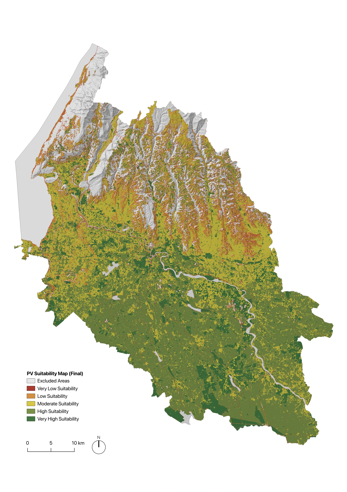
9.2 Strategic Solar Hotspots (500 m Grid Aggregation)9.2 Solar Hotspots strategici (aggregazione su griglia 500 m)
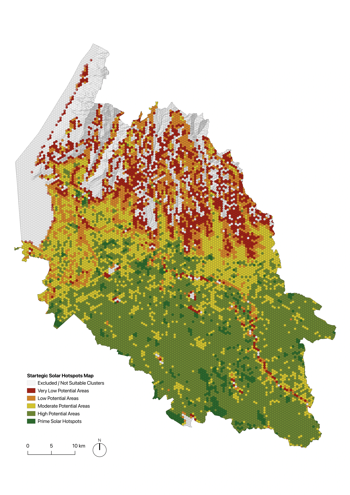
9.3 Strategic Zoning & District Identification9.3 Zonizzazione strategica & individuazione dei distretti
Converting the suitability map into the hexagonal grid made it possible to delineate three key macro-areas. Two indicators guide the comparison: the Prime Hotspot Coverage (density/concentration of Prime-class cells, an index of strategic relevance) and the High + Prime Areas (real availability of suitable land, an index of operational potential).La conversione della Suitability Map nella griglia esagonale ha permesso di perimetrare tre macro-aree chiave. Due indicatori guidano il confronto: la Prime Hotspot Coverage (densità/concentrazione di celle di classe Prime, indice di rilevanza strategica) e le High + Prime Areas (disponibilità reale di terreno idoneo, indice di potenziale operativo).
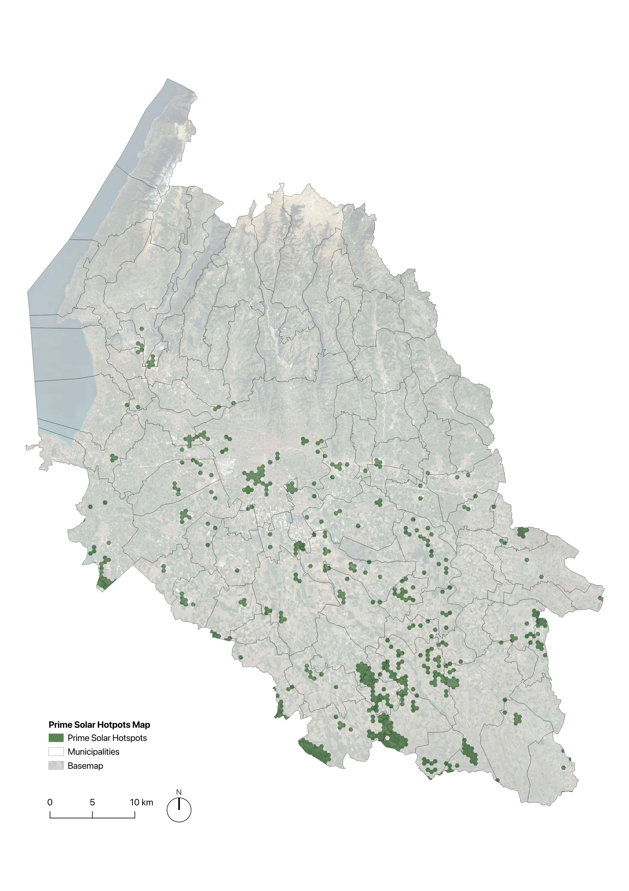
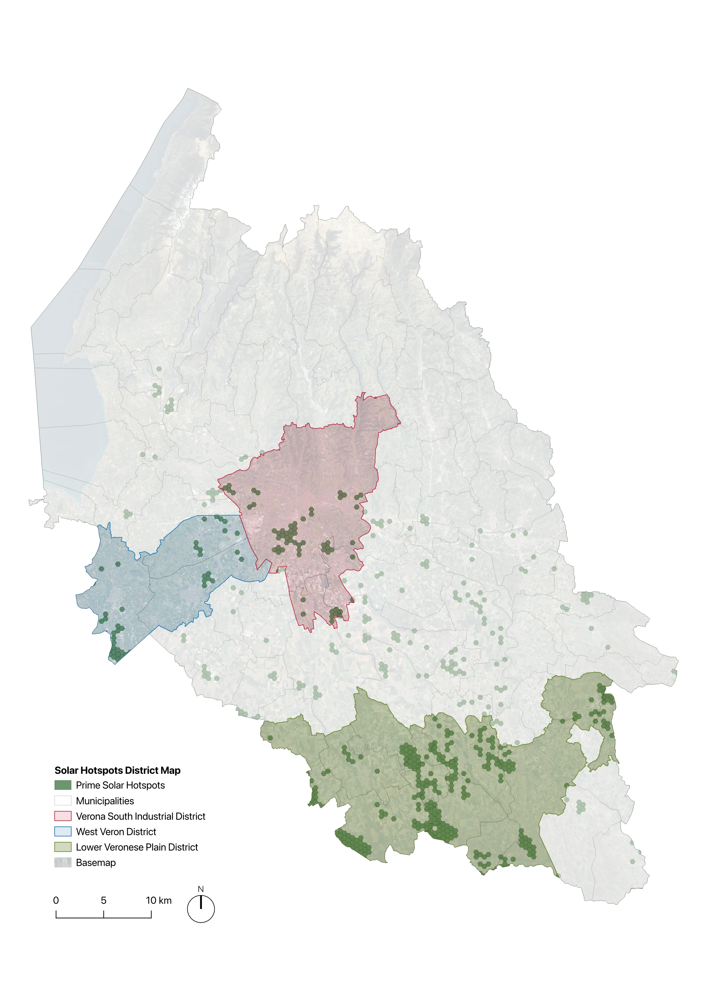
Verona South Industrial District
| Area (km²) | Mean PV ScorePunteggio FV medio | Prime Hotspot Coverage*Copertura Prime Hotspot* | Prime Hotspot Area (km²)Area Prime Hotspot (km²) | High + Prime Areas (km²)Aree High + Prime (km²) |
|---|---|---|---|---|
| 235,13 | 2,71 | 58,88 | 12,75 (5%) | 85,61 (36%) |
Located between the Verona ZAI (industrial zone), the Europa quadrant and the municipalities of San Giovanni Lupatoto and Buttapietra. An area already served by logistics and industrial infrastructure: top priority for permitting speed and lowest conflict risk, ideal for fast-return investments.Individuato tra la ZAI di Verona, il quadrante Europa e i comuni di San Giovanni Lupatoto e Buttapietra. Area già servita da infrastrutture logistiche e industriali: massima priorità per velocità di permitting e minor rischio di conflitti, ideale per investimenti a ritorno rapido.
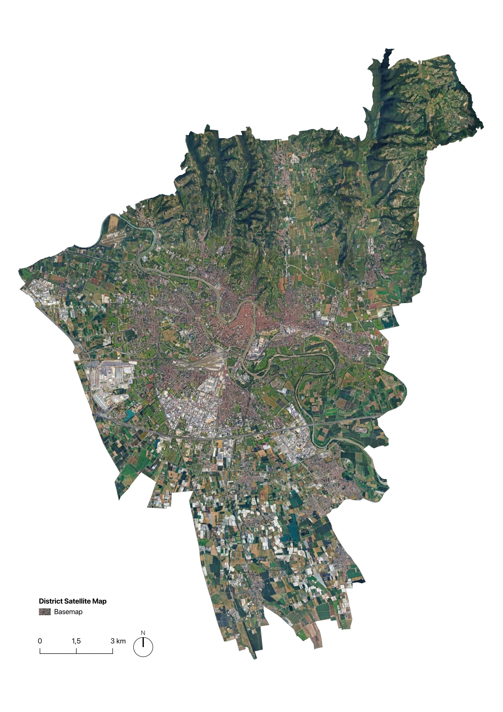
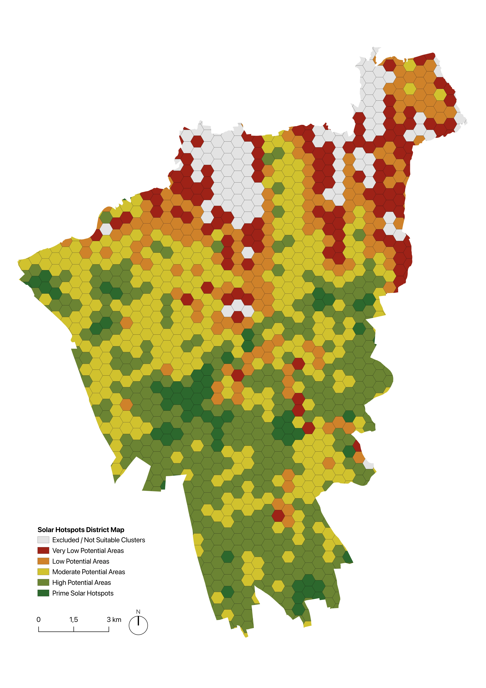

Lower Veronese Plain District
| Area (km²) | Mean PV ScorePunteggio FV medio | Prime Hotspot Coverage*Copertura Prime Hotspot* | Prime Hotspot Area (km²)Area Prime Hotspot (km²) | High + Prime Areas (km²)Aree High + Prime (km²) |
|---|---|---|---|---|
| 408,87 | 3,67 | 256,74 | 55,59 (14%) | 359,81 (88%) |
The province's flagship strategic area: fully flat morphology (shading zeroed) and minimal constraints, limited to protected areas (SAC Adige River, Paludi del Brusà e Busatello, correctly isolated by the model). The highest absolute quantitative potential; it requires mitigation for farmland consumption and a proximity analysis to primary substations.Area strategica di punta della provincia: morfologia totalmente pianeggiante (ombreggiamenti azzerati) e vincoli minimi, circoscritti alle aree tutelate (ZSC Fiume Adige, Paludi del Brusà e Busatello, correttamente isolate dal modello). Il potenziale quantitativo assoluto più elevato; richiede mitigazione per il consumo di suolo agricolo e un'analisi di prossimità alle cabine primarie.
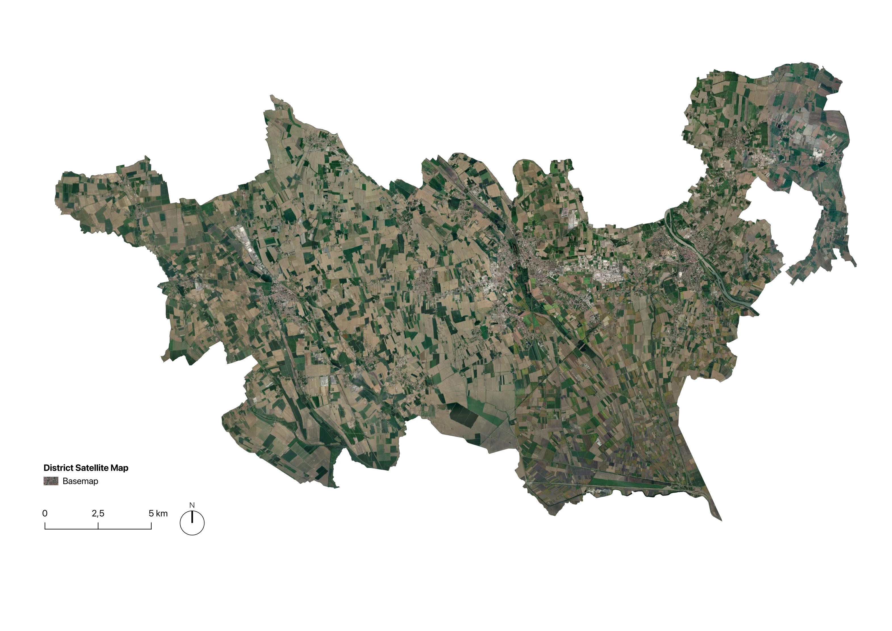
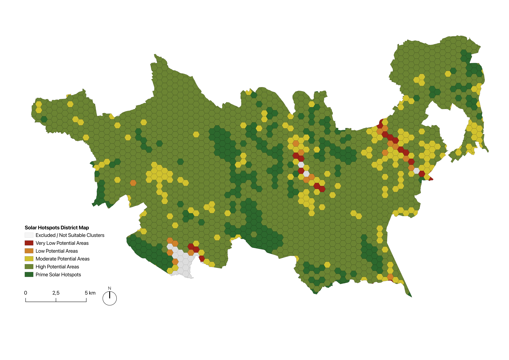

West Verona District
| Area (km²) | Mean PV ScorePunteggio FV medio | Prime Hotspot Coverage*Copertura Prime Hotspot* | Prime Hotspot Area (km²)Area Prime Hotspot (km²) | High + Prime Areas (km²)Aree High + Prime (km²) |
|---|---|---|---|---|
| 162,14 | 3,15 | 39,45 | 8,54 (5%) | 74,19 (45%) |
More fragmented and complex availability, conditioned by the hilly morphology and by landscape constraints (prime crops and vineyards). It requires an advanced engineering approach (slope-adaptive tracking systems) and a careful landscape-integration study.Disponibilità più frammentata e complessa, condizionata dalla morfologia collinare e da vincoli paesaggistici (colture e vitigni di pregio). Richiede un approccio ingegneristico avanzato (tracker a inseguimento adattabili alle pendenze) e un attento studio di inserimento nel paesaggio.
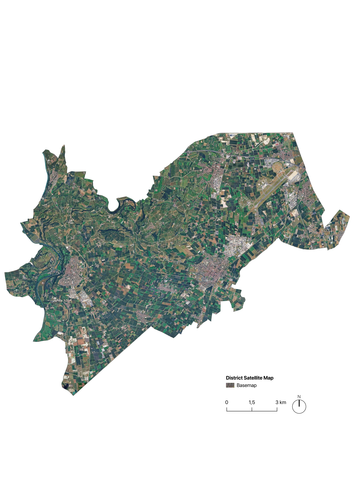
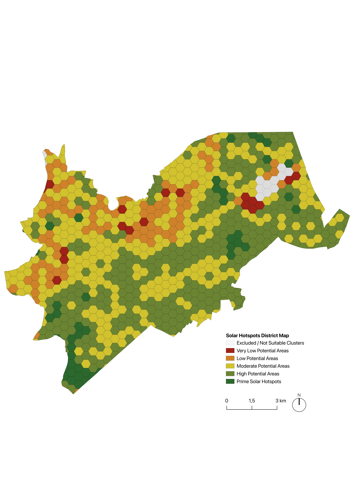

* Prime Hotspot Coverage: equivalent number of Prime-class hexagonal cells contained in the district; partial cells at the boundaries are weighted in proportion to the area covered.* Prime Hotspot Coverage: numero equivalente di celle esagonali di classe Prime contenute nel distretto; le celle parziali ai confini sono pesate in proporzione all'area coperta.
10.Results & DiscussionRisultati & discussione
10.1 Macro-Spatial Distribution10.1 Distribuzione macro-spaziale
The environmental and institutional constraints exclude a priori almost all the areas of low morphological suitability (the mountainous north of the province). The planning and scouting challenge thus shifts exclusively to the Veronese plain, where suitability ranges from moderate to very high depending on the compatibility of current land use.I vincoli ambientali e istituzionali escludono a priori la quasi totalità delle aree a bassa idoneità morfologica (il nord montano della provincia). La sfida di pianificazione e scouting si sposta così esclusivamente nella pianura veronese, dove l'idoneità varia da moderata a molto alta in base alla compatibilità dell'uso del suolo attuale.
10.2 Edge Case Optimization: The "Salt & Pepper" Effect10.2 Ottimizzazione dei casi limite: l'effetto "sale e pepe"
On perfectly flat terrain, the aspect analysis generated cartographic noise (millimetric slope variations → random, fragmented orientations). The problem was solved by conditioning the Raster Calculator in two distinct steps.Sui terreni perfettamente pianeggianti l'analisi dell'esposizione generava un rumore cartografico (variazioni millimetriche di pendenza → orientamenti casuali e frammentati). Il problema è stato risolto condizionando il Raster Calculator in due fasi distinte.
To clean the categorised aspect map: below 2° (Veronese plain) a constant value of 2 (neutral/flat exposure) is assigned by default, otherwise the raster's real value is kept, preserving accuracy where the slope really matters.Per ripulire la mappa dell'esposizione categorizzata: sotto i 2° (Piana Veronese) si assegna d'ufficio il valore costante 2 (esposizione neutra/pianeggiante), altrimenti si mantiene il valore reale del raster, preservando l'accuratezza dove l'inclinazione incide davvero.
FinalAspect = (Slope < 2) * 2 + (Slope >= 2) * ReclassifiedAspectLikewise, so as not to penalise the plains in the suitability score because of terrain micro-variations: below 3° the maximum score (5) is assigned directly, regardless of pixel orientation; above 3° the original score computed from slope aspect is kept.Allo stesso modo, per non penalizzare le pianure nel punteggio di idoneità a causa di micro-variazioni del terreno: sotto i 3° si assegna direttamente lo score massimo (5), a prescindere dall'orientamento dei pixel; sopra i 3° si mantiene il punteggio originario calcolato dall'esposizione del versante.
AspectScore = if(Slope < 3, 5, ReclassifiedAspectScore)10.3 The Role of Exclusion Masks10.3 Il ruolo delle maschere di esclusione
The Raw Suitability showed anomalies (e.g. Lake Garda at medium-low suitability, because slope and aspect mathematically compensated the zero land score). The final application of the Boolean masks removed water bodies and absolute constraints from the calculation, validating the robustness of the model.La Raw Suitability mostrava anomalie (es. il Lago di Garda a idoneità medio-bassa, perché pendenza ed esposizione compensavano matematicamente il punteggio nullo del suolo). L'applicazione finale delle maschere booleane ha eliminato specchi d'acqua e vincoli assoluti dal computo, validando la solidità del modello.
10.4 Strategic Siting & District Takeaways10.4 Localizzazione strategica & conclusioni sui distretti
- Lower Veronese Plain (The Volume Giant): the highest absolute quantitative potential; requires mitigation of farmland consumption and a proximity analysis to primary substations.Lower Veronese Plain (The Volume Giant): potenziale quantitativo assoluto più elevato; richiede mitigazione del consumo di suolo agricolo e analisi di prossimità alle cabine primarie.
- Verona South Industrial (The Fast-Track Hub): top priority for permitting speed, exploiting built-up and disused industrial surfaces.Verona South Industrial (The Fast-Track Hub): massima priorità per velocità di permitting, sfruttando superfici antropizzate e industriali dismesse.
- West Verona (The Tech-Demanding Zone): fragmented availability and landscape constraints; requires tracking systems and a landscape-integration study.West Verona (The Tech-Demanding Zone): disponibilità frammentata e vincoli paesaggistici; richiede tracker a inseguimento e studio di inserimento nel paesaggio.
11.Limitations & Future DevelopmentLimiti & sviluppi futuri
- Spatial Resolution Asymmetry: the model integrates datasets at different resolutions — the high resolution of the TINITALY DEM (10 m) coexists with the coarser scale of CORINE Land Cover, with an apparent geometric precision not supported by the original information detail at land-use boundaries.Spatial Resolution Asymmetry: il modello integra dataset a risoluzioni diverse — l'alta risoluzione del DEM TINITALY (10 m) convive con la scala più grossolana del CORINE Land Cover, con apparente precisione geometrica non supportata dal dettaglio informativo originario ai confini d'uso del suolo.
- Grid Connection Proximity (future development): suitability is currently based on environmental and morphological criteria; a crucial limit is the distance from grid infrastructure (HV/MV primary substations). An essential development: a cost-distance criterion to estimate the burden of the connection.Grid Connection Proximity (sviluppo futuro): l'idoneità è oggi basata su criteri ambientali e morfologici; un limite cruciale è la distanza dalle infrastrutture di rete (cabine primarie AT/MT). Sviluppo essenziale: un criterio di analisi costo-distanza per stimare l'onerosità della connessione.
- DOC/DOP zones: not included as a Boolean constraint because they rarely constitute an absolute ban; turning them into a rigid score would have introduced arbitrariness, undermining the model's statistical objectivity.Zone DOC/DOP: non incluse come vincolo booleano perché raramente costituiscono un divieto assoluto; tradurle in punteggio rigido avrebbe introdotto arbitrarietà, inficiando l'oggettività statistica del modello.
Tools & Skills
QGIS · GDAL · DEM processing (TINITALY 10 m) · Slope & Aspect analysis · Reclassification · Weighted Overlay (MCDA) · Boolean exclusion masks · Hexagonal binning / zoning · CORINE Land Cover · Cartographic design · Spatial Decision Support (SDSS).
References
- Tarquini S., Isola I., Favalli M., Battistini A., et al. — TINITALY DEM, Istituto Nazionale di Geofisica e Vulcanologia (INGV), Sezione di Pisa.
- Regione del Veneto — Direzione Pianificazione Territoriale (Geoportale Regionale Veneto).
- Copernicus Land Monitoring Service — CORINE Land Cover.
- Rete Natura 2000 — Ministero dell'Ambiente e della Sicurezza Energetica (MASE).
- Malczewski, J. (2006). GIS-based multicriteria decision analysis: a survey of the literature. International Journal of Geographical Information Science, 20(7).
- Multi-criteria evaluation of solar energy technologies: A review.